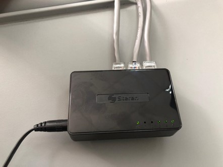
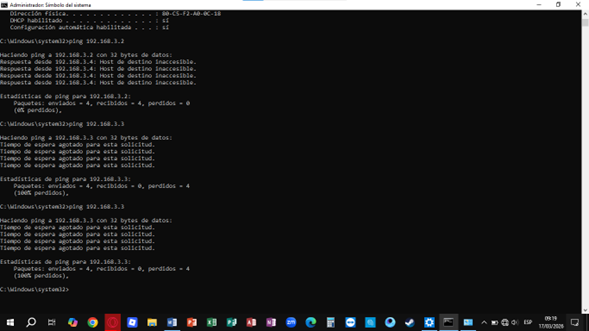
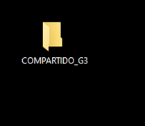

En este proyecto se realizó la configuración de una red local (LAN) mediante la conexión de varias computadoras a través de un switch. Se asignaron direcciones IP estáticas para permitir la comunicación entre equipos y se verificó la conectividad mediante pruebas de red. Además, se configuró el uso compartido de archivos, permitiendo el acceso a recursos entre las computadoras. Este proyecto permitió comprender el funcionamiento básico de redes, direccionamiento IP y trabajo colaborativo en entornos conectados.


